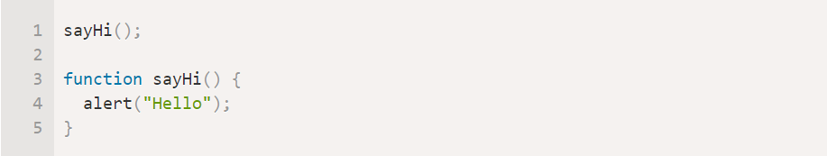
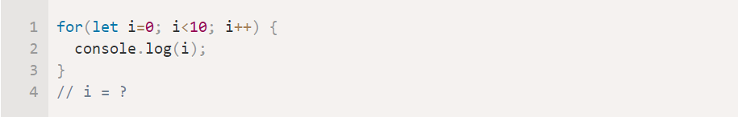

Для того, чтобы повторить решение, необходимо выполнить следующие шаги:
1) На кнопку поставить обработчик нажатий. По нажатию на кнопку будет вызываться функция, передаваемая вторым параметорм.
addEventListener("click", buttonClick)
2) По нажатию на кнопку срабатывает функция.
function buttonClick() {}
3) Функция считывает значение из поля ввода и проверяет его на пустоту. Если поле пустое, то в LocalStorage по ключу 'name' заносится строка "Привет, Незакомец!". Иначе, если поле не пустое, то в переменную name сохраняется введенное пользователем имя и сохраняется в LocalStorage.
if (document.getElementById("inputName").value == ''){
localStorage.setItem('name', "Привет, Незакомец!");
} else {
let name = document.getElementById("inputName").value;
localStorage.setItem('name', "Привет, " + name + "!");
{
4) Очищаю поле ввода.
inputName.value = '';
5) Очищаю div, чтобы в нём лежало всегда только одно значение.
while (div.firstChild) {
div.removeChild(div.firstChild);
}
6) Внутри фунцкции buttonClick() вызываю функую setName(), которая устанавливает имя в блок в правом верхнем углу:
let p = document.createElement('p');
p.textContent = localStorage.getItem('name');
p.setAttribute("class", "p-name-user");
div.appendChild(p);
Зачем нужен?
JavaScript - это язык программирования, который позволяет Вам создать динамически обновляемый контент, управляет мультимедиа, анимирует изображения, впрочем, делает всё, что угодно.
Как работает?
Работает JavaScript на стороне клиента, то есть запускается в браузере и не используется на стороне сервера. Сценарии на стороне клиента позволяют пользователю интерактивно взаимодействовать с Web-страницей после того, как она была обработана сервером и загружена браузером.
На что способен?
1) Создать в html - файле блок, в который мы выведем результат работы калькулятора.
2) Создать переменную, которая будет содержать этот блок. Записать этот блок в переменную с помощью метода:
document.getElementById()
3) На кнопку поставить обработчик нажатий. По нажатию на кнопку будет вызываться функция, передаваемая вторым параметорм.
addEventListener("click", buttonClickCal)
4) Функция, выполняющая основную логику.
function buttonClickCalc() {}
while (divCalc.firstChild) {
divCalc.removeChild(divCacl.firstChild);
6) Записываю в переменные значения полей ввода:
let h = document.getElementById("inputHight").value;
let b = document.getElementById("inputBottom").value;
7) Очищаю поля ввода:
inputHight.value = '';
inputBottom.value = '';
8) Создаю элемент параграф, в который потом запишу резульат
let pCalc = document.createElement('p');
9) Выполняю проверку на случай, если пользователь не ввёл данные. Если строки пустые, то в переменную записываю сообщение об ошибке. Устанавливаю переменой класс, чтобы редактировать CSS - стили. Добавляю пременную в div с помощью метода appendChild().
if(h == '' || b == ''){
pCalc.textContent = "Вы не ввели строки";
pCalc.setAttribute("class", "res-error");
divCalc.appendChild(pCalc);
10) Аналогично выполняю проверку не ввёл ли пользователь отрицательные значения.
11) Проверяю, не получилось ли в результате работы алогритма NaN следующим условием:
if(isNaN(h*b*0.5))
Если условие истинно, то вывожу сообщение об ошибке.
12) Если после всех проверок не было истинно ни одно условие, то вычисляю площадь.
1) Создать в html - файле блок, в который мы выведем результат работы скрипта.
2) Создать переменную, которая будет содержать этот блок. Записать этот блок в перемнную с помощью метода:
addEventListener("click", buttonClickCompare)
function buttonClickCompare() {}
while (divCompare.firstChild) {
divCompare.removeChild(divCompare.firstChild);
let str1 = document.getElementById("inputString1").value;
let str2 = document.getElementById("inputString2").value;
inputString1.value = '';
inputString2.value = '';
let pCompare = document.createElement('p');
if(str1 == '' || str2 == ''){
pCompare.textContent = "Вы не ввели строки";
pCompare.setAttribute("class", "res-error");
divCompare.appendChild(pCompare);
12) Если после всех проверок не было истинно ни одно условие, то выполняю сравнение длин строк.
str1.length === str2.length
Введите 5 чисел через пробел
addEventListener("click", buttonClickSort)
function buttonClickSort() {}
while (divSort.firstChild) {
divSort.removeChild(divSort.firstChild);
6) Записываю в переменную значение поля ввода:
let str = document.getElementById("inputArray").value;
7) Методом split разбиваю строку на массив строк, а затем методом map все строки привожу к типу Number. Теперь массив arr состоит из 5 элементов типа Number.
let arr = str.split(' ').map(Number);
8) Очищаю поле ввода:
inputArray.value = '';
9) Создаю элементы параграфы, в которые потом запишу результаты
let pError = document.createElement('p');
let pMax = document.createElement('p');
let pMin = document.createElement('p');
10) Выполняю проверку на случай, если пользователь не ввёл данные. Если строка пустая, то в переменную записываю сообщение об ошибке. Устанавливаю переменой класс, чтобы редактировать CSS - стили. Добавляю пременную в div с помощью метода appendChild().
if(str1 == '' ){
pSort.textContent = "Вы не ввели строку";
pSort.setAttribute("class", "res-error");
divSort.appendChild(pSort);
11) Выполняю проверку на количество элеметов в массиве.
if (arr.length < 5)
if (arr.length > 5)
12) Если после всех проверок не было истинно ни одно условие, то записываю в переменные максимальное и минимальное значение массива.
pMin.textContent = "Min: " + Math.min.apply(null, arr)
pMax.textContent = "Max: " + Math.max.apply(null, arr)
00 : 00 : 00
1) Создаю три глобальные переменные:
let isWirking; - флаговая переменная, равна 0, если таймер не работает, равна 1, если работает
let startTime; - хранит изначально заданный пользователем интервал времени
let time; - перемненная, хранящая оставшееся для отсчёта время
2) Ставлю обработчики нажатий на кнопки таймера:
start1.addEventListener('click', start);
stop1.addEventListener('click', stop);
reset1.addEventListener('click', reset);
timePassed1.addEventListener('click', timePassed);
3) В перемненную count передаю параграф, отвечающий за вывод времени
let count = document.getElementById("timerRes");
4) По нажатию на кнопку Старт страбатывает функция strat()
5) Сначала функция проверяет, работает ли уже таймер. Если таймер не работает, ты выполняются шаги по его включению. если же таймер уже включен, то функция не работает. Для проверки используются условие:
if(isWorking == 0)
6) Функция start() считывает значения из текстовых полей и устанавилаев значение 1 в переменную isWorking
let hours = document.getElementById("hours").value;
let minutes = document.getElementById("minutes").value;
let seconds = document.getElementById("seconds").value;
Функция переводит полученные из полей ввода данные в секунды и сохраняет это значение в переменные startTime и time:
startTime = hours*3600 + minutes*60 + seconds*1;
time = hours*3600 + minutes*60 + seconds*1;
Выполняется проверка на валидацию. Если в результате подсчёта секунд получился тип данныз NaN, то выводится текст "Проверьте ввод":
if(isNaN(time)){
count.innerHTML = "Проверьте ввод";
Если валидация пройдена успешно, то выполняется функция updateCountDown(), которая переводит секунды тз переменной time в часы, минуты и секунды. С интревалом в секунду из перененной time вычитается единица, то есть время уменьшается на секунду и функция отрабатывает заново.
function updateCountDown(){
let h = Math.floor(time/3600);
h = h < 10 ? "0" + h : h;
let m = Math.floor(time/60);
while(m >= 60){ m-=60; }
m = m < 10 ? "0" + m : m;
let s = time % 60;
s = s < 10 ? "0" + s : s;
count.innerHTML = h + ' : ' + m + ' : ' + s;
time--;
if (time<0) { clearInterval(intervalID); }
intervalID = setInterval(updateCountDown, 1000);
На нажатие кнопку Стоп срабатывает функция stop:
function stop(){ clearInterval(intervalID); }
При нажатии на кнопку Сброс срабатывает функция reset(). Эта функция присваивает перемнной isWorking значение 0, так как таймер больше не работает. Функция останавливает таймер, очищает поля ввода и устанавливает отрисовку таймера в начальный вид.
isWorking = 0;
h=0;
m=0;
s=0;
count.innerHTML = `00 : 00 : 00`;
clearInterval(intervalID);
hours.value = "";
minutes.value = "";
seconds.value = "";
7) Методом split разбиваю строку на массив строк, а затем методо map все строки привожу к типу Number. Теперь массив arr состоит из 5 элементов типа Number.
В чем разница между confirm и prompt?
Что такое условный оператор?
Какие функции выполняет JS?
Что делает оператор ** ?
Сработает ли вызов функции до объявления в этом коде: 
Чему равно i в конце кода? 
Какие ключевые слова используются в JavaScript для того, чтобы объявить переменную?
Этот оператор завершает выполнение текущей функции и возвращает её значение.
Как сделать многострочный комментарий?
Правильный вариант для IF, где i должно отличаться от 2:
addEventListener("click", buttonTestReadyClick)
2) Функция buttonTestReadyClick() выполнит следующие задачи:
Получит каждую радио-кнопку с помощью функции document.getElementById()
Проверит, выбрана ли эта радио-кнопка с помощью свойства checked
Если выбрана кнопка с верным вариантом, то текст окрасится в зелёный цвет, если с неверным - в красный.
Установить цвет можно следующим образом:
document.getElementById('id').style.color = "#fd3939f2";
При этом остальные варианты в вопросе должны окраситься в белый цвет (цвет по умолчанию).
3) Так же необходимо завести переменную res и увеличивать её на 1, если пользователь выбрал верный вариант.
4) После проверки всех радио кнопок, проверки выбранных вариантов, функция выполнит следующие действия:
5) Создаст в html - файле блок, в который выведет результат работы скрипта.
6) Создаст переменную, которая будет содержать этот блок. Записать этот блок в перемнную с помощью метода:
7) Очистит div c результатом теста, чтобы в нём лежало всегда только одно значение.
while (dTestRes.firstChild) {
dTestRes.removeChild(dTestRes.firstChild);
8) Создаст элемент параграф, в который потом запишет результат
let pTestRes = document.createElement('p');
9) Запишет в переменную значение переменной с результатом подсчета правильных вариантов ответа:
pTestRes.textContent = "Ваш результат: " + res +"/10";
10) С помощью функции appendChild() добавит параграф с результатом в блок на странице.
dTestRes.appendChild(pTestRes);
addEventListener("click", buttonInvisibleClick)
function buttonInvisibleClick() {}
3) Функция устанавливает до этого момента невидимому блоку свойство display: flex. Изначально блоку было задано свойство display: none
document.getElementById("super-div").style.display = "flex";
4) А также функция вызывает другую функцию disableScrolling(), которая блокирует скроллинг экрана.
function disableScrolling(){
let x=window.scrollX;
let y=window.scrollY;
window.onscroll=function(){
window.scrollTo(x, y);
};
5) Блоку, который появляется на экране, прописываем функцию:
onclick="visibilityFunction()"
6) Эта функция опять устанавливает блоку display: none, то есть скрывет блок по нажатию на него, а также восстанавливает скроллинг.
document.getElementById("super-div").style.display = "none";
enableScrolling();
function enableScrolling(){
7) В самом появляющемся блоке необходимо отразить имя пользователя и текущую дату.
8) Имя установим из хранища LocalStorage, аналогично тому, как до этого выводили имя в правом углу экрана.
Шаги с установкой имени и даты необходимо также делать в функции buttonInvisibleClick()!
let divInvisibleBlock = document.getElementById('super-div');
let pName = document.createElement('p');
pName.textContent = localStorage.getItem('name');
pName.setAttribute("class", "p-name-user-invisible-block");
divInvisibleBlock.appendChild(pName);
9) Записываю в перемнную текущую дату с помощью new Date()
let d = new Date();
10) Также, как и имя, добавляю дату в блок, только прежде обрабатываю её в функции function formatDate(date)
function formatDate(date) {
let dd = date.getDate();
if (dd < 10) dd = '0' + dd;
let mm = date.getMonth() + 1;
if (mm < 10) mm = '0' + mm;
let yy = date.getFullYear();
if (yy < 10) yy = '0' + yy;
return dd + '.' + mm + '.' + yy;